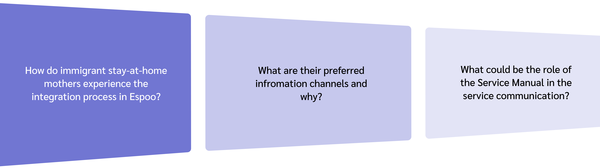
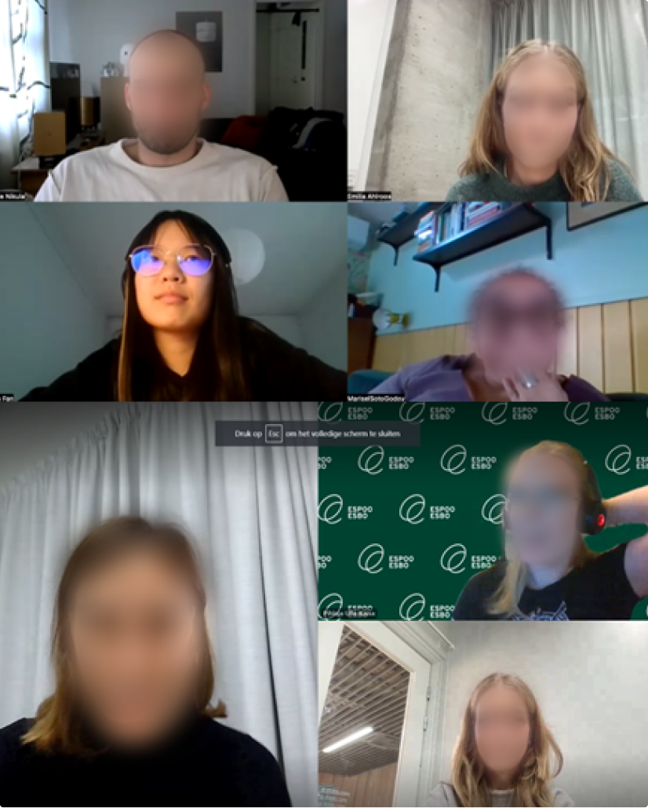
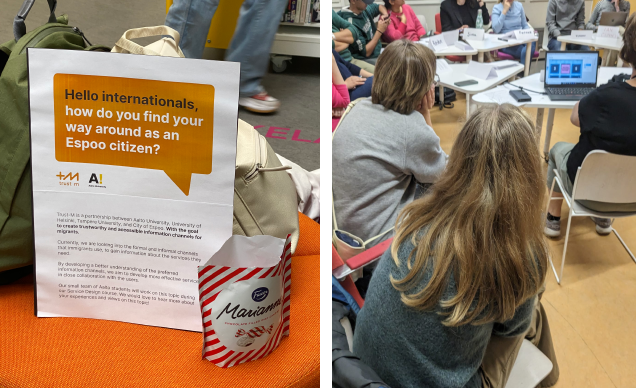
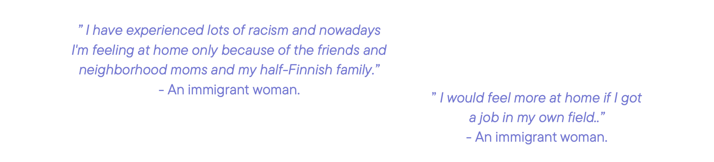

Trust-M, 2023
More accessible information about services that help with integration
In cooperation with: Emilia Ahlroos, Mirte van der Nat, Kalle Nikula
This project aims to help Espoo (city of Espoo) and Trust-M research team in designing new AI-assisted service, that will help immigrants to find services for their integration in Espoo. The outcome is a set of service recommendations based on our findings about the lives of immigrant mothers. The recommendations can be used for validating ideas when designing the Service Manual.
KEYWORDS
Service design Service research Immigrant integration services City of Espoo
SKILLS
Service design Service research Teamwork Communication with vulnerable groups Stakeholder engagement Workshop Facilitation & Co-creation Data Analysis Graphic design
Background
First residence permits issued in 2019-2021 by gender and reason for immigration
Our project brief from Trust-M states that Espoo is a rapidly growing city, with foreign speakersaccounting for 20% of the population. The forecast suggests this figure will rise to over 30% by 2035. The city's strategy places a strong emphasis on the integration of immigrants, in collaboration with the broader Espoo community. Additionally, the City Council has set the goal of making Espoo the foremost city for integration in Finland as part of its broader strategy (City of Espoo Integration Programme 2022-2025).
Scope
This project helps mainly in the process of problem definition and contributed to design principles. The research initially aimed to study the integration process of stay-at-home moms but faced challenges in reaching them. We expanded our scope to include service providers working closely with this group. We focused our interviews on preferred information channels and found that usage is influenced by personal and cultural factors, with most information coming through family and community. The final study explored how the Service Manual could improve communication between immigrants and service providers. Through our co-creation workshop, we developed recommendations on the role of the Service Manual in service communication. Despite challenges with multiple scopes, the insights gained through this process helped us reach our final conclusions. Research Methodology
We used various methods to collect data, starting with desk research by reviewing materials from Trust-M and additional sources on integration. We focused on stay-at-home mothers, a vulnerable group for integrating into Finnish society, as they are harder to reach and use fewer integration services. We conducted four expert interviews with Espoo and NGO workers, along with interviews of immigrants, especially women and mothers, to gain a deeper understanding.Expert Interview
 5 * expert interview. The expert interviews were with the head of integration of NGO Monika-Naiset, a communication specialist from Hello Espoo, the senior expert from the mayor's office (also the contact person between the city of Espoo and the Muslim community), and the coordinator of the NGO Neighborhood Mothers.Interviews with immigrants in Iso Omena Library
 We have conducted interviews in the library reading section and the Language Café. Language Café is a group where anyone, of any skill level, can go to discuss changing topics in Finnish. Eight of the participants were interviewd. This time questionnaire with visual elements are used to help the communication and interview.in Neighborhood Mothers
 We organized in-depth interviews in
Neighborhood Mothers. We interviewed
four immigrant women and three of them
were mothers. We used the same materials
as in the Language café interviews. From
these interviews, one important takeaway
was to see how much the process of finding
information varies between these women.
We organized in-depth interviews in
Neighborhood Mothers. We interviewed
four immigrant women and three of them
were mothers. We used the same materials
as in the Language café interviews. From
these interviews, one important takeaway
was to see how much the process of finding
information varies between these women.
Findings
Stay-at-home mothers are falling out of the integration process. They have small social circles and there's a lack of suitable integration plan. There are some good practices emerging, like a network approach: Whoever finds a person in need of help, can direct them to Hello Espoo. The findings are also concluded into following points:1 Integration is more than just employment
▼Answers to the question “how integrated do you feel?”
2 Integration services are favoring job seekers
▼3 Face-to-face interaction is important
▼4 Social contacts are the most important sources of information
▼5 Trust is influenced by inadequate knowledge
▼Digital Public Service
The scope of the Trust-M research team is AI-assisted digital public service, which brought a very new direction to our project. Based on our previous research findings, we envision how to provide more trustworthy immigrant integration services in the context of AI-assisted digital services. A co-creation workshop is scheduled to help ideation.Co-creation Workshop
TASK
Discuss about: How would an AI-Assisted Digital Service Manual affect their journeys? How would the AI influence the values that are currently provided through human interaction? What would be the best case or worst case?The co-creation workshop
Outcome
Building on our findings and ideas, we aimed to provide a practical outcome that Trust-M can use in developing their new AI-assisted digital service. While the manual is envisioned in a hybrid format, the specific technologies are still undecided. We believe sharing our process learnings will be valuable for future efforts. Here, we present recommendations for both the research process and the final outcome to support the Trust-M project.